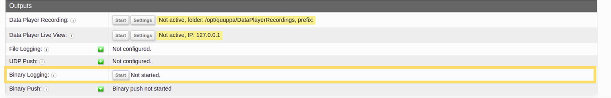

Record Binary Data for Quuppa Support
In cases where more advanced troubleshooting is needed, Quuppa may ask you to provide the binary logs for your deployment. These binary logs are encrypted data logs that can be used to remotely analyse and troubleshoot the system. This document will walk you through the steps to record the files using the Positioning Engine Web Console and send them to Quuppa. If you prefer to use the Quuppa APIs, please see the Log QPE Data section of this manual before proceeding to the Submit Recording section below.
Record Data
To record the binary data for your system, follow these steps:
- Open the Positioning Engine Web Console for your system, e.g. http://localhost:8080/qpe/ if the QPE is running locally.
- Under the Outputs heading, find the Binary
Logging row and click on the Start
button.

Once binary logging has started, this row will show the path to where the binary logs are being recorded, highlighted in red.
- For Windows, the path will look something like this:
C:\opt\quuppa\binaryLogs\20220103_1\ - For Linux, the path will look something like this:
/opt/quuppa/binaryLogs/20220103_1/
- For Windows, the path will look something like this:
- Complete any testing requested by Quuppa Support while the system is
recording the binary data. This may involve running specific tests or just
letting the system run for some time. During the test, you should replicate
the environment and issue that you are troubleshooting to make sure that it
shows up in the recording. Note: If Quuppa hasn't specified a time span for the testing, recording data for about 10 minutes is a good place to start. Quuppa will inform you if a longer period is required. Additionally, if you are using tags other than the Quuppa tags in your deployment, we recommend also running the test using our QT1-1 tags with the ASSET_TAG configuration as a benchmark. This will help to rule out any issues caused by the tags themselves.
- Once you are done, click on the Stop button to end the
recording. When the recording is ready, the row will show Finished
logging to: and the path to the file, highlighted in
yellow.

Submit Recording
To submit the recorded binary log files to Quuppa, follow these steps:
- Create a .zip file of the entire directory, making sure to include all of
the files found in the specified folder, e.g.
C:\opt\quuppa\binaryLogs\20220103_1\.Note: If you have multiple recordings, you can include all relevant directories in the same .zip file. - Send the .zip file to Quuppa. If it's size exceeds 25 MB, you may need to use a file hosting location such as Dropbox or Google Drive to share the file.
- Provide Quuppa with any relevant information for troubleshooting your system, e.g. a description of the issue that you have encountered, a timestamp for when the issue becomes visible in the logs and any details such as tag IDs or areas of concern that could help Quuppa identify the cause of the issue.
- To change the ownership of the binary log folder:
sudo chown -R <user>:<user_group> /opt/quuppa/binaryLogs/<binary_log_directory> - To move the binary log folder to your desktop:
sudo cp /opt/quuppa/binaryLogs/<zipped_bin_log_dir> /home/username/Desktop